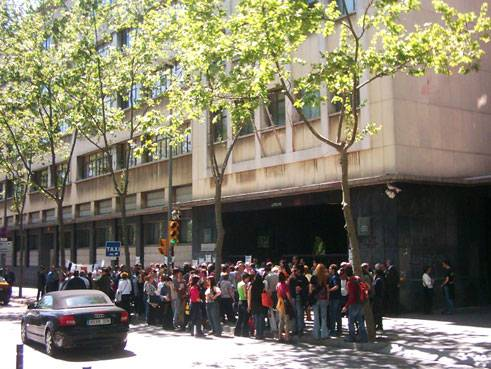

|
 |
 |
|
||||
|
Avui hem pogut
conèixer la sentència
ABSOLUTÒRIA del judici contra 8 de les 9 persones
detingudes en l’acció de contra el tancament de Miniwatt, el mes de
març del 2005. |
L’altre persona, una noia menor d’edat, també va ser absolta abans de l’estiu per un Jutjat de menors. Així doncs, totes les persones detingudes en l’acció solidària han estat absoltes! |
|||
|
||||
|
Avui ha finalitzat la vista contra els vuit joves detinguts arran del tall de carretera que diverses persones van realitzar el passat 22 de març a la Gran Via de Barcelona. L'acció s'emmarcava en la campanya de solidaritat amb els i les treballadores de Miniwatt, que tenien en perill els seus llocs de treball a causa de la política de deslocalitzacions que duen a terme moltes de les empreses que hi ha instal·lades al nostre país. Durant la segona
part del judici, que s'ha realitzat aquest matí, han declarat els testimonis
de la defensa i els acusats. Els advocats dels joves, per la seva banda,
han defensat la innocència dels seus clients, i han destacat les contradiccions
en les que, segons ells, van caure els diferents agents policials quan
van declarar en la primera part del judici. El ministeri fiscal, però,
s'ha mantingut en les seves peticions d'un any de presó per tots els
joves i ha demanat per un altre dos anys de presó, atès que era reincident,
mesura que podria suposar el seu ingrés a presó, ja que té una altra
causa pendent. |
Després de presentar les conclusions d'ambdues parts, el judici ha quedat vist per sentència. Tant els joves com la defensa s'han mostrat esperançats de que hi hagi una sentència absolutòria, i han tornat a destacar les nombroses 'contradiccions' en les que va caure la fiscalia i els policies que van declarar en la vista. A la sortida dels jutjats hi havia concentrats desenes de treballadores de Miniwatt. Un membre del comitè d'empresa de la filial de LG-Philips ha agraït a tots ells la seva assistència a la concentració i ha destacat la 'desproporció' de les penes sol·licitades als joves, ja que aquestes accions 'es produeixen amb molta freqüència i mai havia passat res', ha recalcat. |
|||
| Roda
de premsa pel judici als solidaris i solidàries amb Miniwatt |
concentració
dimarts 17 de maig '05 des de 2/4 de 10 del matí als Jutjats de Lluís Companys 'Metro' línia 1 "Arc de Triomf" 2a. part del judici dijous 28 d'abril a les 12.41 h el judici   la concentració des de les 12 del migdia als Jutjats de Lluís Companys el 28 d'abril 2005 
tornar |
Presenten
500 autoinculpacions en protesta pel judici als detinguts en un acte contra el tancament de Miniwatt |
|||
|
Els sindicats
CGT, Co-bas, Intersindical-CSC, IAC, FTC, el comitè d’empresa de Miniwatt
i organitzacions socials com Justícia i Pau i la FAVB han recolzat en
roda de premsa els solidaris/es amb Miniwatt que seran jutjats el 28
d’abril amb una demanda fiscal d’un any per cada un. |
La
Xarxa Contra els Tancaments i la Precarietat presentarà més de 500 autoinculpacions
en protesta contra el judici a vuit detinguts en una manifestació contra
el tancament de la planta de LG-Philips Barayo (antiga Miniwatt). Aquestes
inculpacions seran presentades al jutge dijous que ve. En la concentració, que va tenir lloc el passat 22 de març en la Gran Via de Barcelona, els manifestants van tallar el tràfic i vuit d'ells van ser detinguts acusats de desordres públics, pel que la Fiscalia demana un any de presó. En una roda de premsa que es va celebrar avui a Barcelona, diferents entitats sindicals, veïnals i socials van protestar contra la "desproporcionada" demanda fiscal i van anunciar una concentració enfront dels Jutjats de Lluís Companys dijous que ve a les 12 hores, en el moment del judici. Durant l'acte d'avui, els representants socials van manifestar que les detencions i les acusacions de desordres públics "responen a la voluntat de reprimir la solidaritat amb els treballadors en lluita i trencar els llaços que han sorgit entre les reivindicacions del comitè d'empresa i els moviments socials". L'economista i president de Justícia i Pau, Arcadi Oliveres, va sostenir que el tancament de Miniwattt és "una mostra més d'una forma de capitalisme que té per lema privatitzar els beneficis i socialitzar les pèrdues" i va cridar que "comencem a demanar als països que són destinació de la localització que comencin a millorar les condicions laborals" dels seus treballadors. Segons Oliveres, els "delinqüents" no són els manifestants que van tallar el tràfic com mesura de protesta, sinó "alguns directors de bancs i coses per l'estil". A més, el president de Justícia i Pau va criticar que aquestes detencions s'assemblen a una "repressió pròpia del franquisme". El membre del Comitè d'Empresa de Miniwatt Juan Montero, per la seva banda, va assegurar que la deslocalització de Philips mostra "el grau de màxima cruesa del capitalisme" i va sostenir que les detencions es van produir perquè "els preocupa que els joves participin en el moviment obrer". "No poden suportar que els joves s'organitzin per a lluitar contra el sistema capitalista", pel que les autoritats busquen "donar un escarment perquè els joves continuïn passant", va afegir. Així mateix, Montero va dir que els detinguts "tenen tot el nostre suport" i va considerar que són "un exemple que deu seguir la joventut". L'advocada dels acusats, Ester Costa, que forma part del Col·lectiu Ronda d'advocats, va criticar la "desproporció" de les acusacions i va argumentar que aquest delicte deuria suposar que la obstaculización de les vies de tràfic "suposin un perill". "En el pitjor dels casos es deuria considerar una falta lleu", va apuntar, ja que "el cort no va suposar cap tipus de perillositat". A més, Costa va criticar que la instrucció del cas es faci per judici ràpid, que té el "problema" de ser "poc *garantista", ja que "no permet que les persones puguin defensar els seus drets amb l'amplitud dels processos normals". 26 Abril 2005 EUROPA PRESS Entre les entitats que donen suport als detinguts es troba Justícia i Pau, la Federació d'Associacions de Veïns de Barcelona-FAVB i els sindicats CGT, Intersindical CSC, Intersindical Alternativa de Catalunya-IAC i la Federació de Treballadors de Catalunya-FTC.
|
||||
|
|
barcelona.indymedia.org/newswire/display/166033/index.php barcelona.indymedia.org/newswire/display/166044/index.php barcelona.indymedia.org/newswire/display/166048/index.php |
|||
|
|
|
|||
Tornar